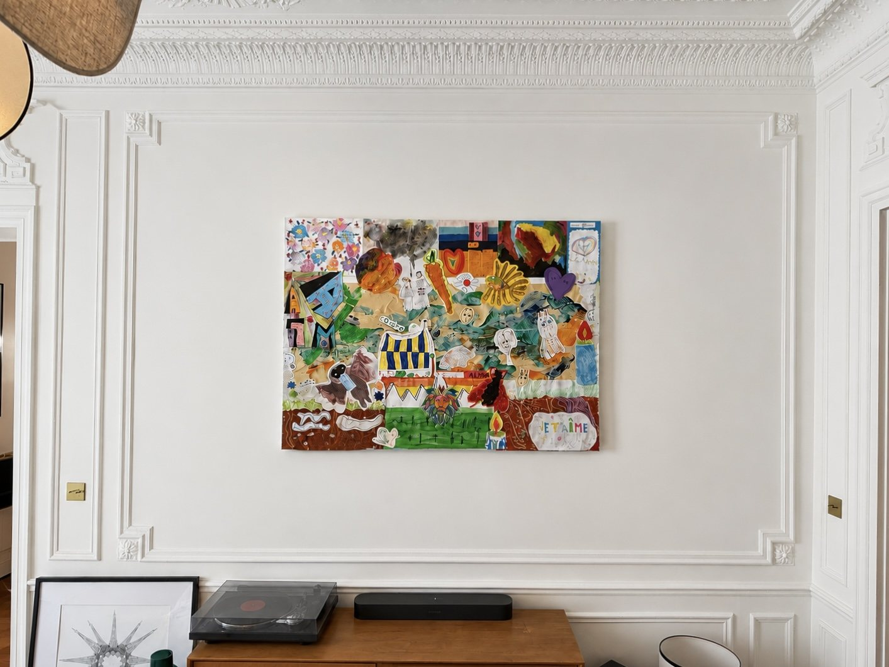
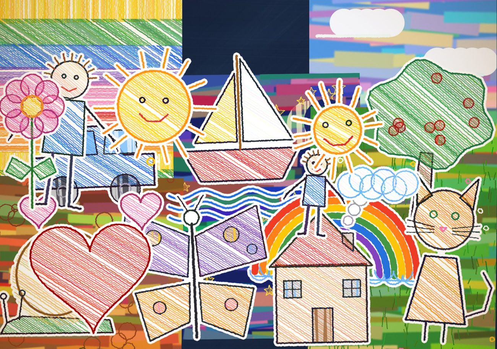
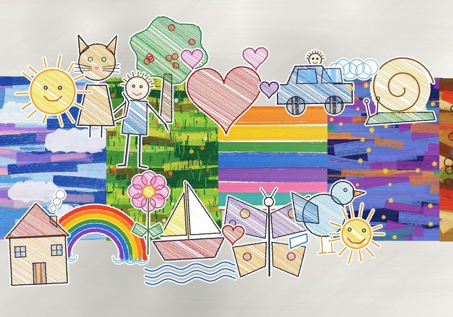
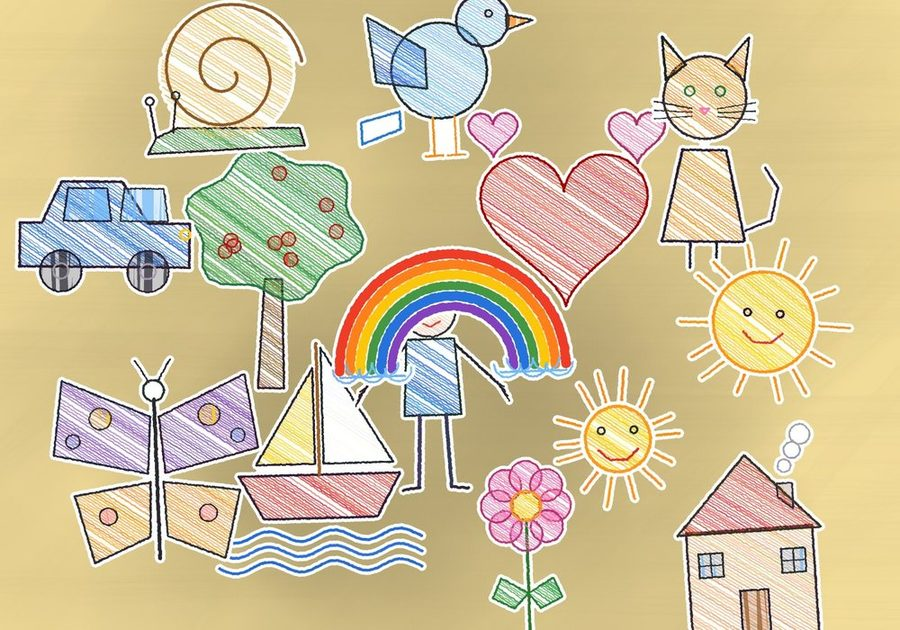
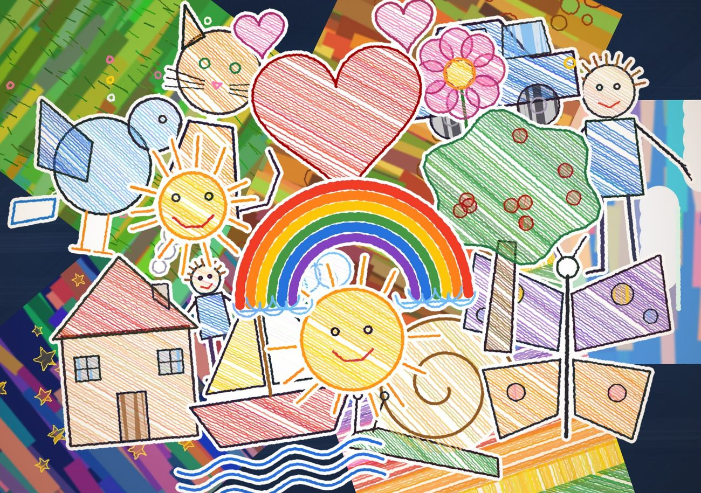
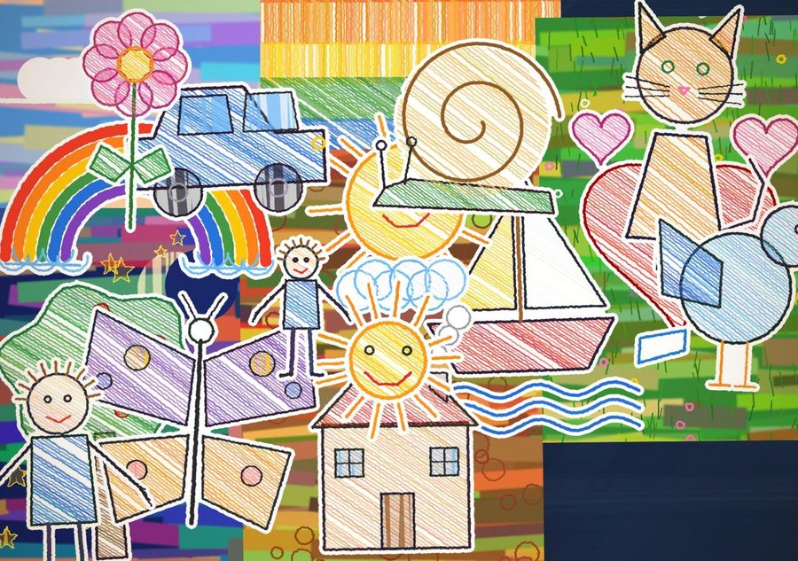
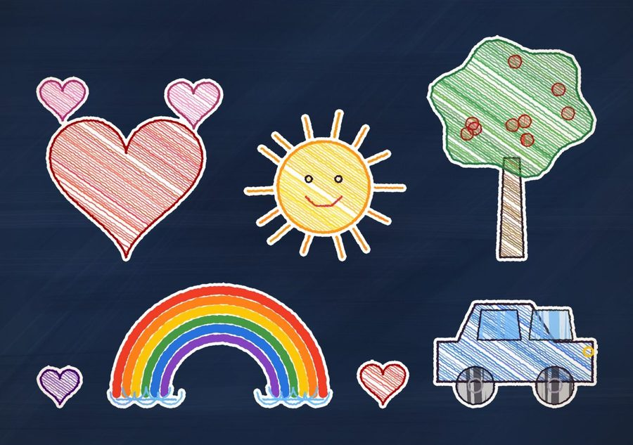
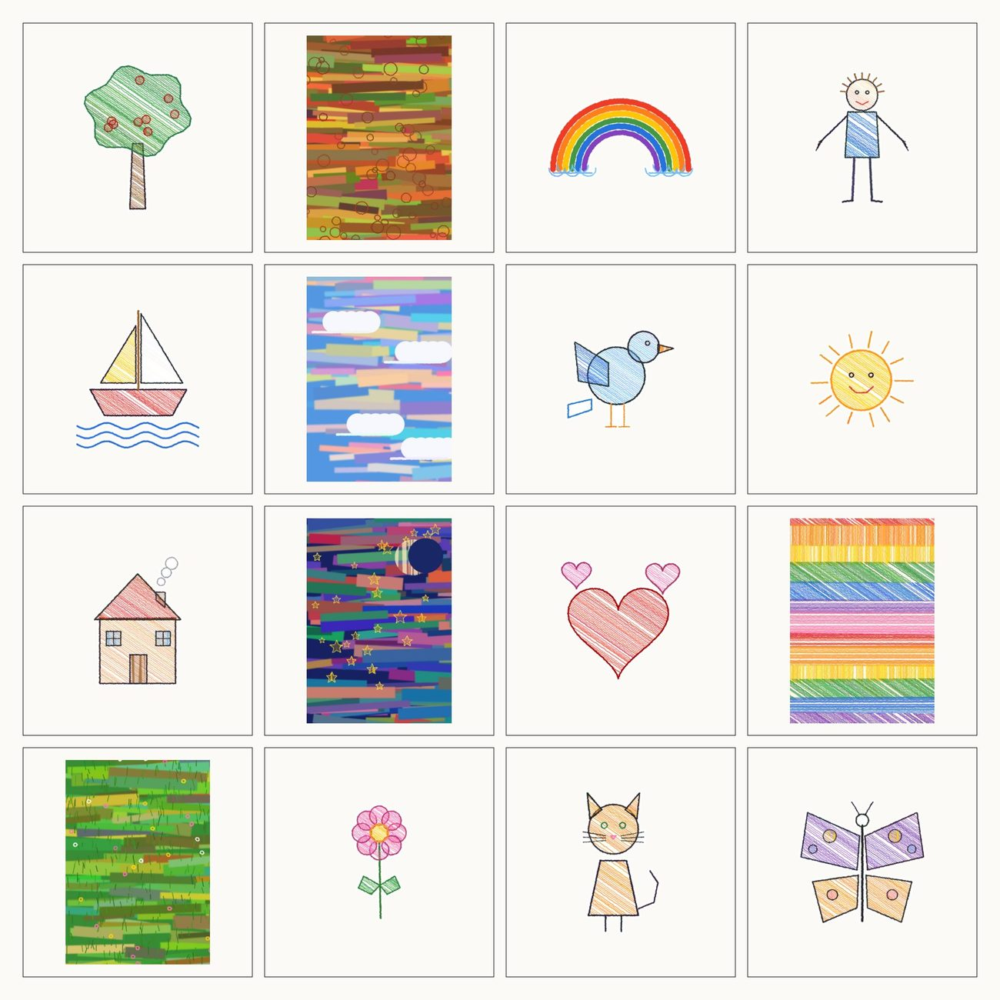
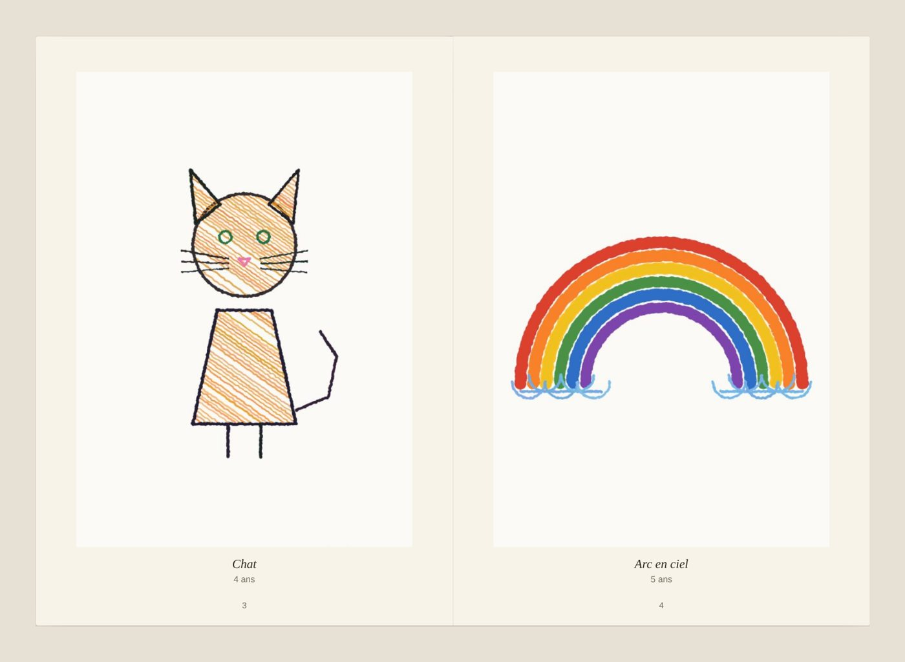

Scannez les dessins
Un PDF du scanner, des photos de téléphone, même posées sur la table ou le parquet : l’atelier retire la surface et ne garde que le dessin.
Atelier Gribouille
Scannez les dessins qui s’accumulent sur le frigo. L’atelier les découpe comme avec des ciseaux et compose une œuvre unique : à imprimer sur toile, ou à réaliser à la main avec les dessins originaux, pour l’accrocher chez vous.
Gratuit pour composer. Les dessins restent les vôtres : tout se passe dans votre navigateur, et dans votre compte si vous en créez un.

Une toile tendue dans le salon, une galerie de petits cadres dans le couloir, un fond sombre pour le séjour : les mêmes dessins, trois ambiances.
Aucune compétence en retouche. L’atelier fait le travail de patience, vous gardez les choix qui comptent.
Un PDF du scanner, des photos de téléphone, même posées sur la table ou le parquet : l’atelier retire la surface et ne garde que le dessin.
Les sujets sont découpés au millimètre, à leur taille réelle, et posés sur les pages peintes. Sept styles sont proposés ; vous déplacez, tournez, ajustez.
Un fichier haute définition à 300 dpi pour l’impression sur toile, aux formats du commerce. Ou le guide de création pour la faire à la main avec les vrais dessins : plan de pose à l’échelle 1, ordre de collage, trait de coupe de chaque original.
Chaque import donne sept propositions, toujours avec tous les dessins. Choisissez-en une, puis faites-la vôtre.







Les dessins sont relus dans leur définition d’origine au moment d’exporter : un scan à 300 dpi donne une toile nette, même en grand format. Rien n’est lissé, rien n’est redessiné : ce sont bien leurs traits.
Commencer maintenant
Le deuxième atelier
Tous leurs dessins réunis dans un vrai livre, comme un album photo : une couverture à leur nom, un dessin par page ou plusieurs, avec son titre et leur âge.
Tout ce qu’on nous demande avant de transformer les dessins en tableau.
Choisissez les plus beaux, scannez-les ou prenez-les en photo, puis réunissez-les dans une œuvre à accrocher ou dans un livre de dessins. L’atelier compose les deux gratuitement, et vous pouvez garder les originaux ou les coller vous-même sur la toile.
Importez les dessins dans l’atelier : il les détoure comme avec des ciseaux, à leur taille réelle, et propose sept compositions avec tous les dessins. Choisissez-en une, ajustez-la, puis téléchargez le fichier haute définition ou commandez le tableau imprimé et encadré.
Composer est gratuit. Le fichier haute définition coûte 14,90 €. Imprimée et livrée en France métropolitaine, l’œuvre coûte dès 39 € sur papier premium, dès 69 € sur toile et dès 79 € encadrée. Le kit à réaliser soi-même est à 89 € et l’œuvre faite à la main avec les originaux dès 490 €.
Non : une photo prise au téléphone suffit. L’atelier retire la table ou le sol autour du dessin et égalise l’éclairage. Pour un grand format, un scan à 300 dpi donne les traits les plus nets.
De quelques dessins à plusieurs dizaines : chaque proposition les utilise tous, à leur taille réelle, sur une toile jusqu’à 200 cm. Vous pouvez en retirer, en dupliquer, les déplacer et les retoucher.
Ils restent dans votre navigateur. Si vous créez un compte gratuit, vos compositions sont gardées dans votre espace, hébergé en Europe, et vous pouvez tout supprimer à tout moment. Les dessins ne servent à rien d’autre qu’à votre œuvre.
Oui, avec le livre de dessins : une couverture à leur nom, un ou plusieurs dessins par page avec leur titre et leur âge, en A4 ou en carré. Il est gratuit et donne un PDF en 300 dpi, prêt pour un service d’albums photo.
C’est l’un des cadeaux les plus touchants pour des grands-parents, pour la fête des mères ou des pères, ou pour Noël. Prévoyez quelques jours pour l’impression et la livraison d’un tableau encadré ; le fichier haute définition et le livre se téléchargent tout de suite.
Encore des idées pour leurs dessins : que faire des dessins de ses enfants ? 9 idées.